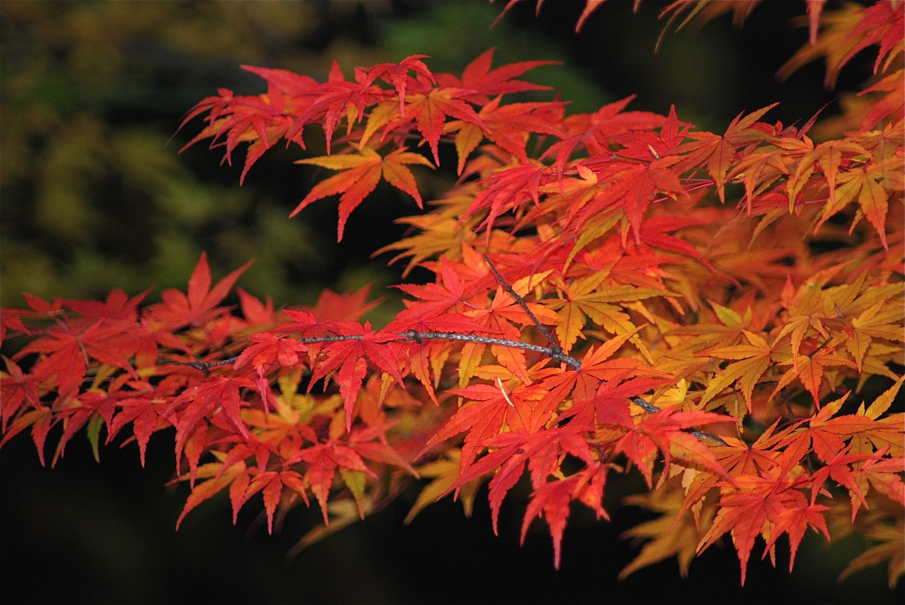

| Good Autumn Colours | Example of awesome Autumn Colours | Changing colour | |||||||||||||||||||||||||||||||||
|---|---|---|---|---|---|---|---|---|---|---|---|---|---|---|---|---|---|---|---|---|---|---|---|---|---|---|---|---|---|---|---|---|---|---|---|
|
Japanese Map  |
As summer ends and autumn comes, the days get shorter and shorter. This is how the trees "know" to begin getting ready for winter. During winter, there is not enough light or water for photosynthesis. The trees will rest, and live off the food they stored during the summer. They begin to shut down their food-making factories. The green chlorophyll disappears from the leaves. As the bright green fades away, we begin to see yellow and orange colors. Small amounts of these colors have been in the leaves all along. We just can't see them in the summer, because they are covered up by the green chlorophyll. The bright reds and purples we see in leaves are made mostly in the fall. In some trees, like maples, glucose is trapped in the leaves after photosynthesis stops. Sunlight and the cool nights of autumn cause the online slots leaves turn this glucose into a red color. The brown color of trees like oaks is made from wastes left in the leaves. It is the combination of all these things that make the beautiful fall foliage colors we enjoy each year. |
|||||||||||||||||||||||||||||||||
| 78sdasdas er3243 dsfwe243 dsbdw324 ssadsd9 | 456 | 123 | |||||||||||||||||||||||||||||||||